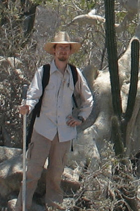

A. Bradley Duthie
I am an evolutionary and community ecologist, and currently a postdoctoral research fellow at the University of Aberdeen.
Contact
School of Biological Sciences
Zoology Building
University of Aberdeen
Tillydrone Avenue
Aberdeen AB24 2TZ
aduthie[at]abdn[dot]ac[dot]uk
brad.duthie[at]gmail[dot]com
(+44) 012242 73255
A. Bradley Duthie
